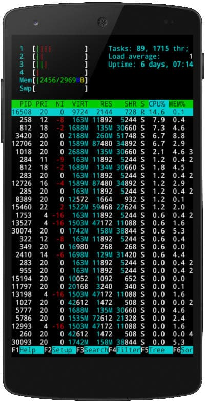
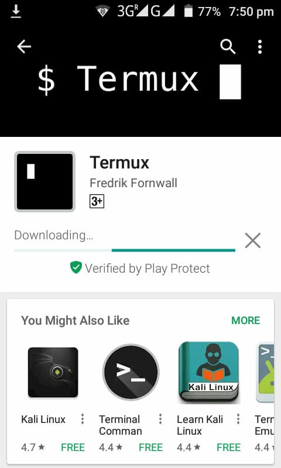
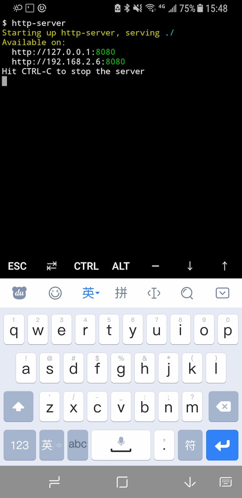
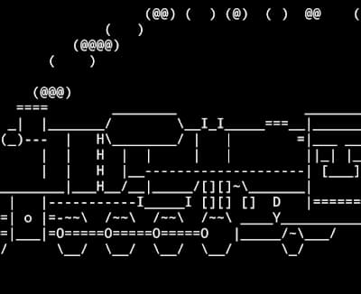
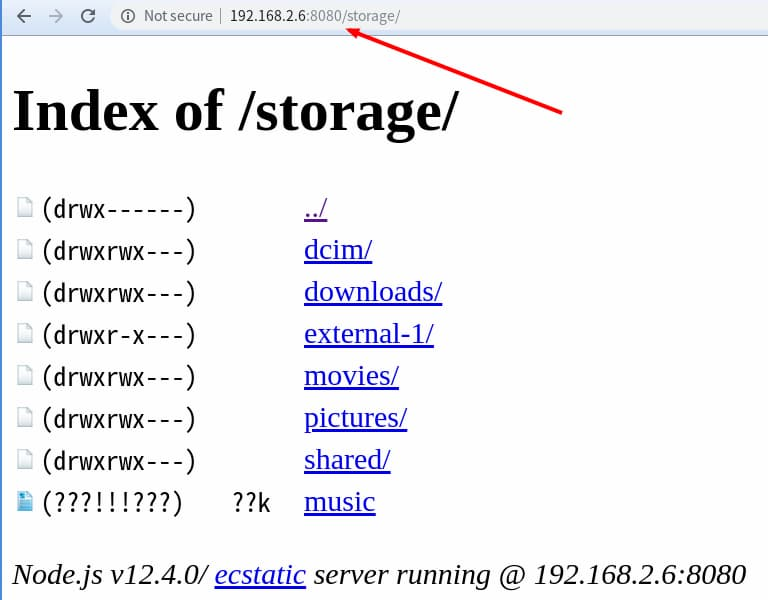

关于如何使用termux搭建局域网文件服务器
手机文件，比如照片和视频，如何下载到桌面电脑？
普通用户可以使用手机线，将手机和电脑连起来。作为开发者，其实有更方便的方法，就是在手机架设一个 HTTP 服务，然后从桌面浏览器访问手机。
本文讲解如何使用 Termux 架设手机的 HTTP 服务器。

一、Termux 是什么？
Termux 是一个安卓手机的 Linux 模拟器，可以在手机上模拟 Linux 环境。它提供一个命令行界面，让用户与系统互动。
它就是一个普通的手机 App，可以从应用商店下载安装。不需要 root 权限，也不需要设置，打开就能使用。

二、环境准备
打开 Termux 以后，就是一个全屏的命令行界面。虽然可以用手机的触摸键盘输入命令，但还是推荐使用蓝牙键盘。
第一步，更新一下系统，保证使用最新版本。
连接远程仓库，获取软件包信息
$ apt update
更新本地已经安装的软件包
$ apt upgrade
第二步，测试系统。
安装 sl 软件包
$ apt install sl
运行
$ sl
上面命令安装测试包sl，然后运行。如果一切正常，会显示一个火车的命令行动画。

第三步，访问本机存储。
手机 App 默认只能访问自己的数据，如果要访问手机的存储，需要请求权限。
$ termux-setup-storage
执行上面的命令以后，会跳出一个对话框，询问是否允许 Termux 访问手机存储，点击”允许”。

这会在当前目录下生成一个storage子目录，它是手机存储的符号链接，后文下载文件就是到这个目录去下载。
三、软件包管理
除了apt命令，Termux 还提供pkg命令进行软件包管理。
安装软件包
$ pkg install [package name]
卸载软件包
$ pkg uninstall [package name]
列出所有软件包
$ pkg list-all
其实，pkg的底层就是apt，只是运行前会执行一次apt update，保证安装的是最新版本。所以，apt install sl基本等同于pkg install sl。
Termux 支持的软件包清单，可以到这里查看。
四、Node.js
下面，安装 Node.js。
$ apt install nodejs
安装完成后，就可以运行 JavaScript 脚本了。比如，新建一个脚本hello.js。
// hello.js
console.log(‘hello world’);
然后，执行这个脚本。
$ node hello.js
hello world
五、架设 Server
现在，通过 Node.js 运行 HTTP Server。
首先，安装 npm 模块http-server。
$ npm install -g http-server
然后，运行 Server。
$ http-server
正常情况下，命令行会提示 Server 已经在 8080 端口运行了，并且还会提示外部可以访问的 IP 地址。

举例来说，手机的局域网 IP 是 192.168.2.6，那么我们通过桌面电脑的浏览器访问http://192.168.2.6:8080，就可以看到 Termux 的根目录了。进入下面的storage子目录，就可以下载手机文件了。

如果手机和电脑不在同一个局域网，那可以打开手机的热点功能，让桌面电脑通过手机热点上网，再访问手机的 HTTP Server。
这里顺便提一下，下面的命令可以从命令行查看手机的 IP 地址。
$ apt install net-tools
$ ifconfig
六、Python
不使用 Node.js，而使用其他方法架设 HTTP Server 也是可以的。下面演示 Python 的方法。
$ apt install python
$ python -m http.server 8080
然后，桌面电脑就可以访问手机了。
Termux 是非常强大的工具，除了上面的方法，还可以架设 Apache 服务器，或者通过其他途径（FTP、SSH、Rsync）访问手机，这里就不详细介绍了。
原文链接：http://www.ruanyifeng.com/blog/2019/07/termux-tutorial.html
#进阶使用
使用cpolar进行内网穿透后可以通过外网访问
如有不明白的地方欢迎加我QQ:3140230365
我可以免费教你！！！